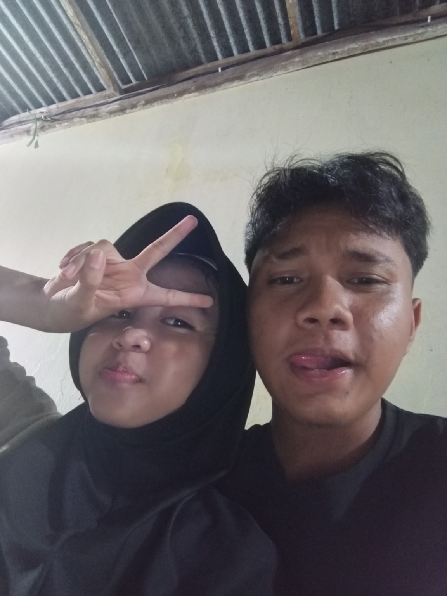
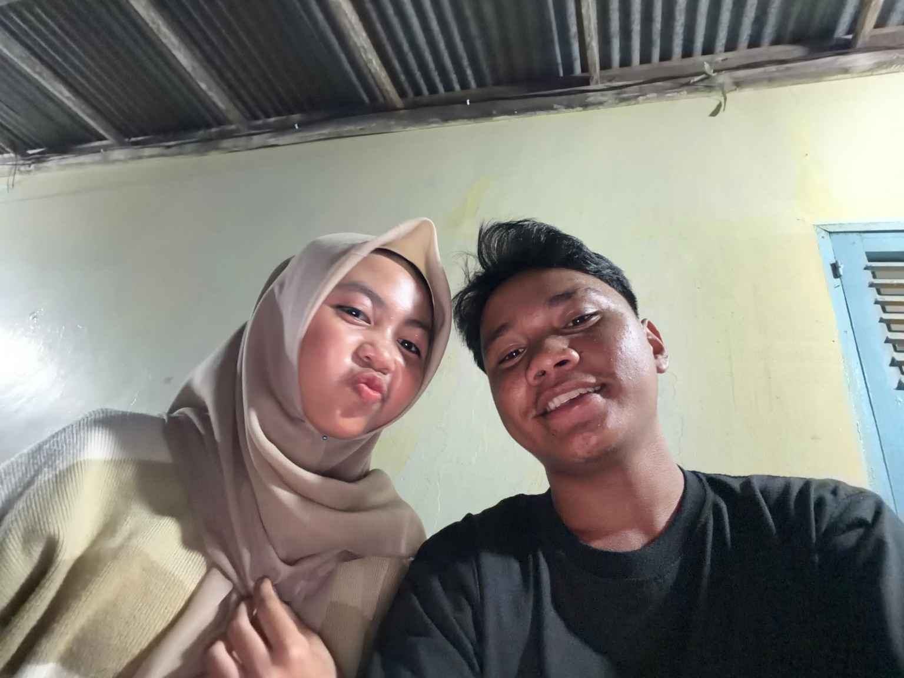
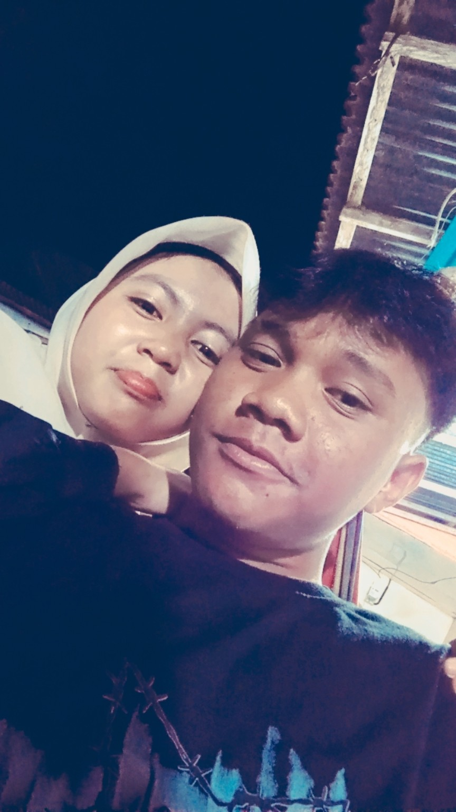
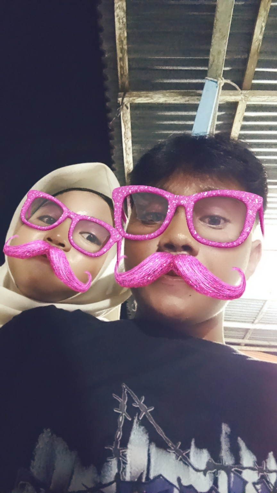
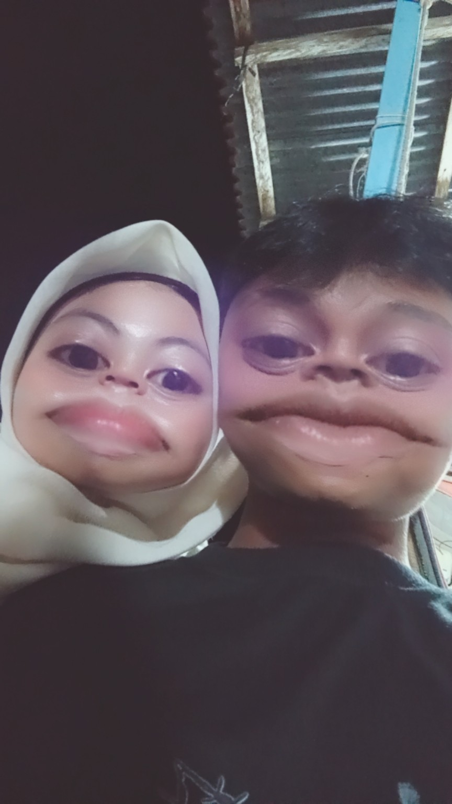
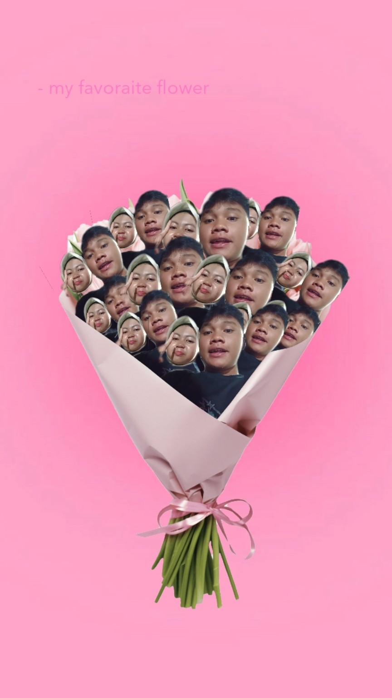
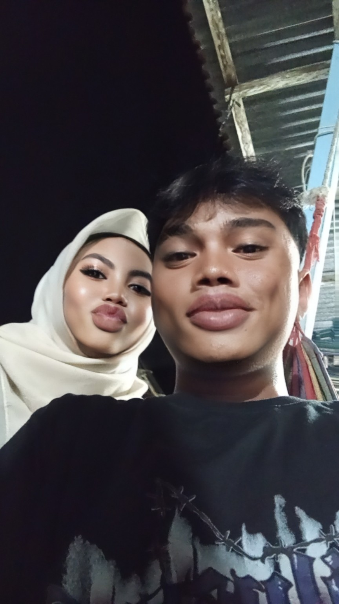
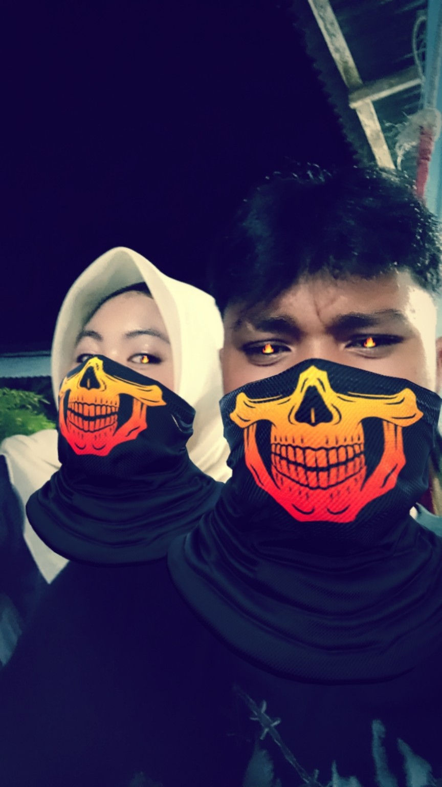
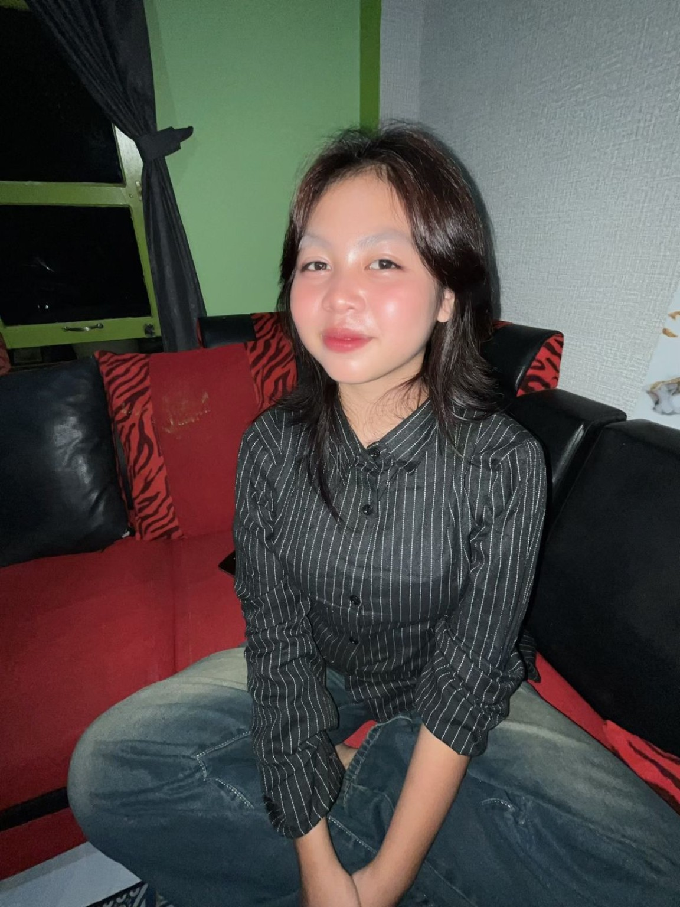
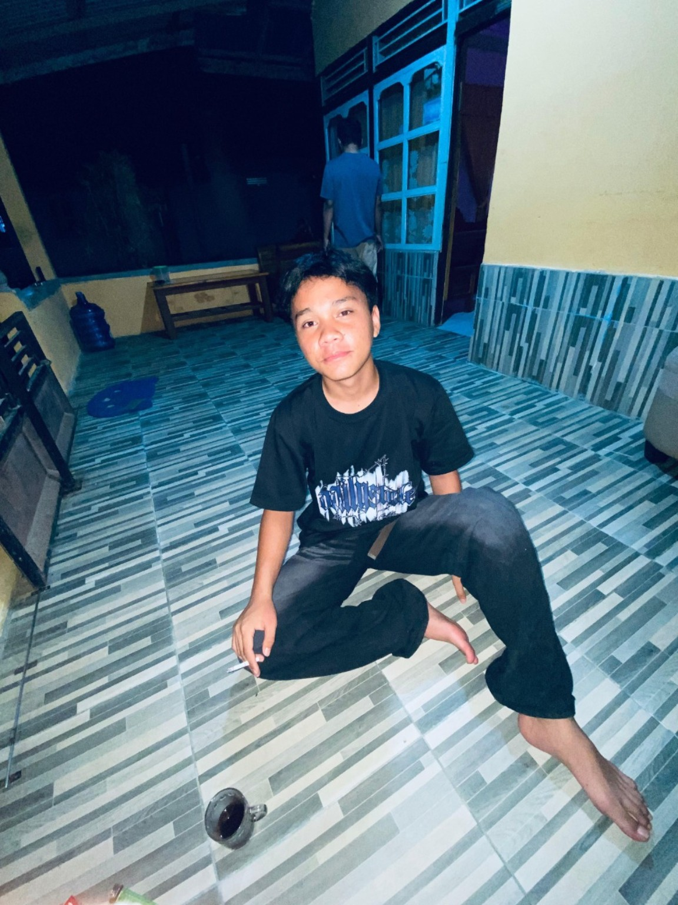

6 APRIL 2025 — forever in my little book
For Wulan.
some memories, some silly faces,
and one person I’d choose again.
STORY
sayang,
walaupun kite banyak halangannya, tapi kita mampu yaa sayangg bertahan dari semua badai yang menerjang.
kadang jalannya nggak gampang, kadang capek juga, tapi entah kenapa selalu ada alasan buat tetap jalan bareng.
yaaa walapunnn masih ada satuu yang belum di terjang badai kita, pasti taukannn?? taulahh. ♡
the day it became “us”
Sejak hari itu, cerita kecil kita mulai punya nama.
we kept choosing each other
Bukan karena semuanya selalu mudah, tapi karena kita mau bertahan.
our silly little memories
Yang biasa-biasa aja, tapi jadi luar biasa karena ada kamu.










ternyata bunga favoritku bentuknya kayak kita:
agak random, tapi tetap pengen dipeluk.
kenapa masih kamu?
ada satu hal lagi.
yang belum kita terjang bareng itu...
happy little anniversary, Wulan.